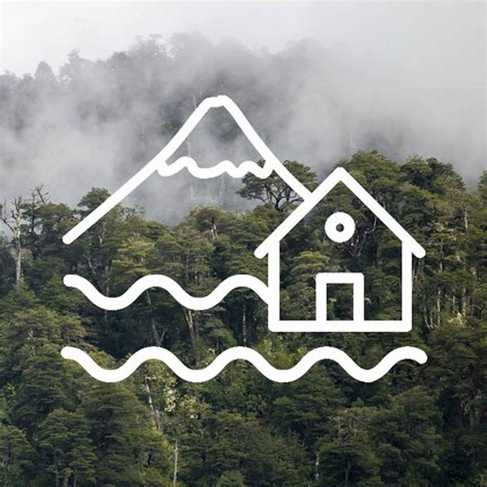
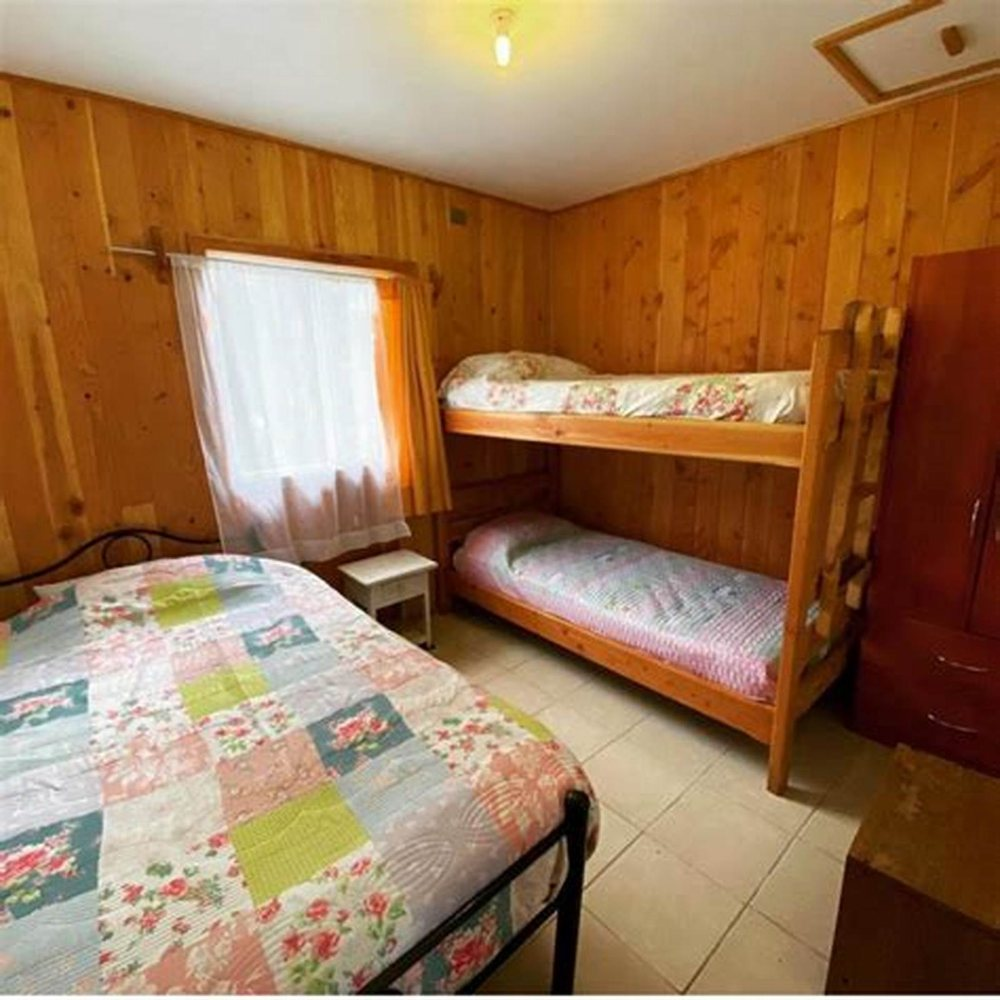
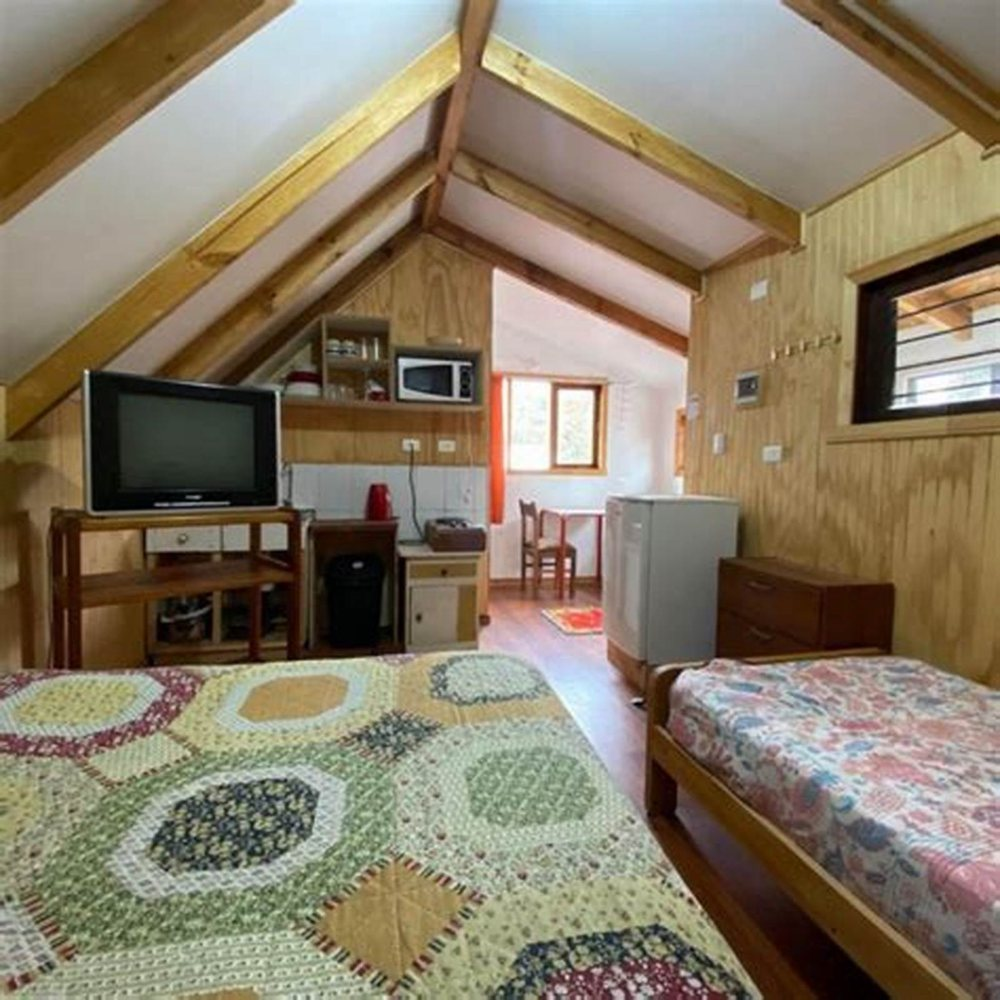

Cabañas · Coñaripe
Llegar donde
alguien te
está esperando
Un portal de reservas le entrega una llave y un código. Un vecino le dice dónde comprar pan a las ocho. Esa diferencia es todo el negocio, y hoy no está escrita en ninguna parte.
- nota en Google
- 4,8
- reseñas
- 124
- teléfono
- +56 9 9403 2480
Paso 01
Llegar
La llegada es la única parte del arriendo que el cliente recuerda entera. Si sale bien, la estadía ya empezó bien; si sale mal, no hay cabaña que lo arregle.
- Hasta qué hora se puede llegar
- falta La familia que sale de Santiago a las once de la mañana llega de noche. Saber que igual los reciben decide la reserva.
- Qué hay que avisar antes
- falta La hora aproximada, cuántos son, si vienen con perro. Tres cosas dichas antes evitan diez mensajes.
- Dónde se estaciona
- falta Y si el auto queda al lado de la cabaña, que es un dato que la gente valora más de lo que parece.
Paso 02
La llave
Acá está la diferencia entre un arriendo y un vecino: quién entrega la llave y qué pasa en ese momento. Un recorrido de dos minutos por la cabaña vale más que cualquier manual pegado en la pared.
- Quién recibe
- falta: confirmar Si recibe el dueño en persona, eso ES el argumento de venta y tiene que estar escrito con esas palabras.
- El recorrido de dos minutos
- falta: confirmar si lo hacen Dónde está el tablero, cómo se prende el agua caliente, cuál llave abre qué. Dos minutos que ahorran una llamada a medianoche.
- Un teléfono para cualquier cosa
- +56 9 9403 2480 Éste sí está. Que exista un número que contesta es la mitad de lo que un portal no puede ofrecer.
Paso 03
La leña
En la zona esto se pregunta siempre y casi nunca está publicado. No es el costo: es no saber si hay que salir a buscarla a las nueve de la noche, con los niños ya cansados.
- Si viene incluida
- falta: incluida, se vende o se lleva Las tres respuestas son buenas. La mala es ninguna.
- Si la estufa queda prendida
- falta Llegar a una cabaña ya tibia en julio es el tipo de detalle por el que la gente escribe una reseña de cinco estrellas.
- Cómo se prende
- falta Media clientela viene de ciudad y nunca ha prendido una salamandra. Explicarlo sin hacerlo sentir tonto es parte del trato de vecino.
La foto que ya tienen y no usan
El atardecer desde el pasto, a pasos de la cabaña
Esta foto está en su Facebook y no está en su ficha de Google, que es donde la gente busca. Es el Calafquén al atardecer desde el pasto de ellos: no una postal comprada, no un render. Quien duda entre dos cabañas de precio parecido elige la que le muestra dónde va a estar a las nueve de la tarde. Mover esta foto de un lado al otro no cuesta nada y es lo primero que hay que hacer.
Paso 04
El dato
del lugar
Esto es lo que un portal de reservas no puede escribir nunca, porque no vive acá. Son las seis cosas que el dueño le cuenta a todo el que llega, y que hoy se pierden si el cliente no pregunta.
-
Dónde se compra pan temprano
falta: confirmar con el dueño
La primera mañana, alguien sale a buscar pan y no sabe adónde ir. Es el dato más pedido de todos los arriendos del sur.
-
A quién pedirle leña si falta
falta: confirmar con el dueño
Un nombre y un teléfono. Con eso el huésped resuelve solo y no llama a las once de la noche.
-
Qué días hay feria y cuáles no
falta: confirmar con el dueño
Ir a la feria el día que no hay es la clase de paseo perdido que arruina una tarde.
-
Dónde hay cajero y si conviene traer efectivo
falta: confirmar con el dueño
En pueblos chicos esto es una pregunta real y nadie la contesta antes de que el cliente esté acá.
-
Qué hacer si llueve tres días seguidos
falta: confirmar con el dueño
La pregunta de todo el que arrienda en invierno. Dos o tres panoramas bajo techo, dichos por alguien de acá, valen una reserva entera.
-
El lugar que no sale en ninguna guía
falta: confirmar con el dueño
Todo pueblo tiene uno. Contarlo es lo que hace que un huésped vuelva y traiga gente.
Ninguna de estas seis respuestas la puedo escribir yo, y justamente por eso es la mejor sección de la página: es la única que ningún competidor ni ningún portal puede copiar, porque hay que vivir acá para contestarla.
La luz encendida cuando llega
Alguien pasó antes a prenderla
Para reservar, hoy se llama
+56 9 9403 2480
Es el número publicado en su ficha de Google. Que conteste una persona y no un formulario es la parte buena; que sea la única forma de saber algo es la que esta página viene a arreglar.
Lo suyo, empezando por el logo
Las tres con pie son suyas, de su Facebook. Sólo el fondo de la portada, el aura y la cita son de banco libre, y están declarados en imagenes/FUENTES.txt.

falta: la cabaña por fuera de noche, con la luz encendida — es la foto que la página promete

